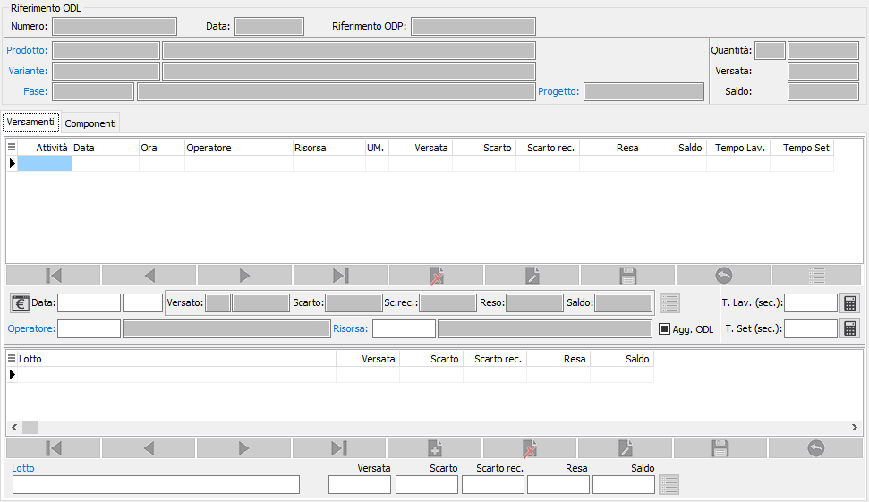
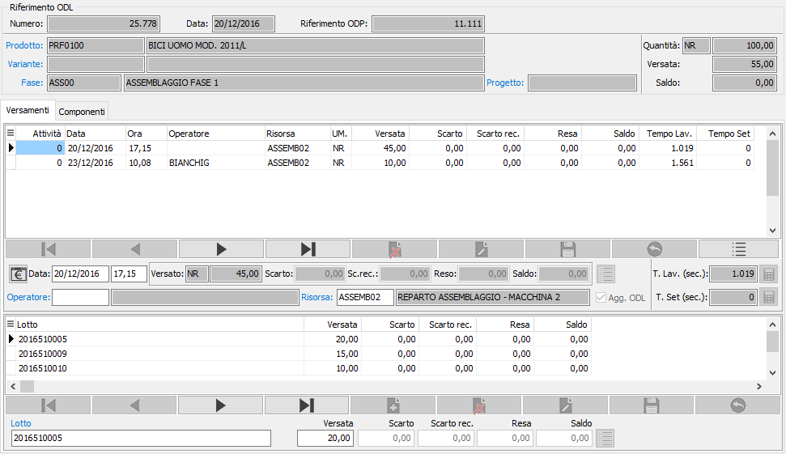
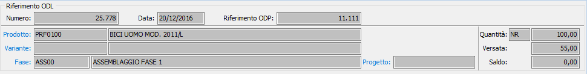
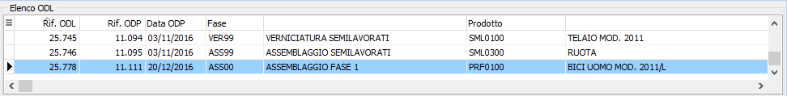
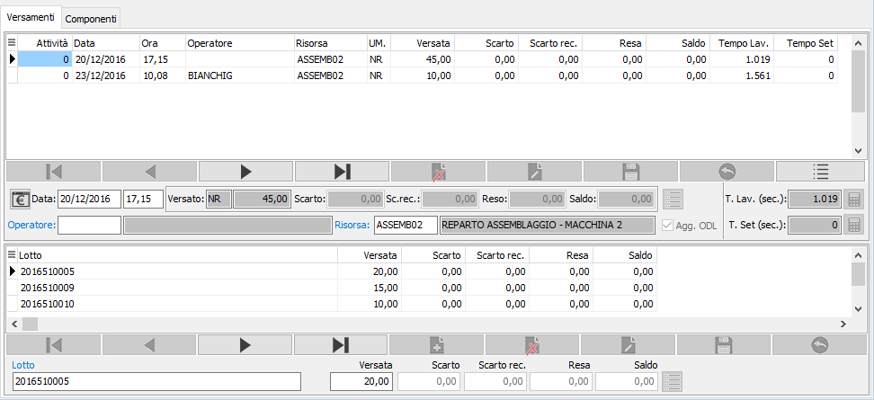
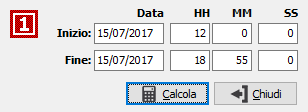
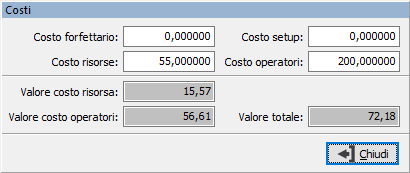
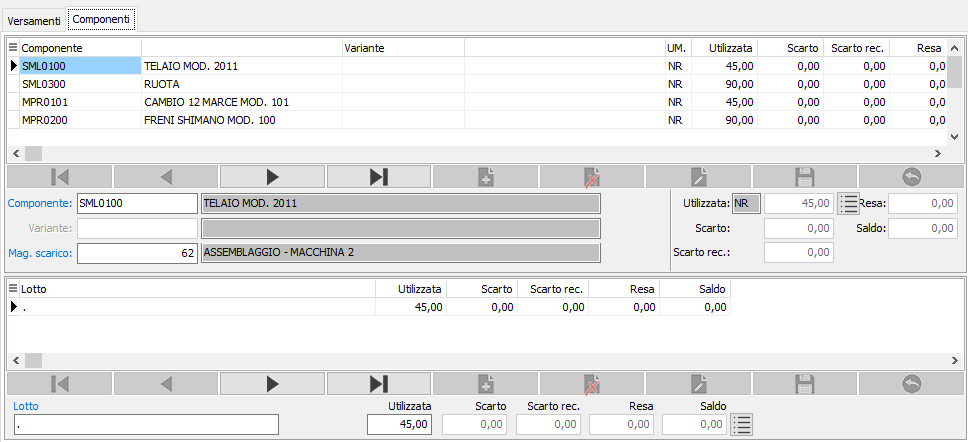
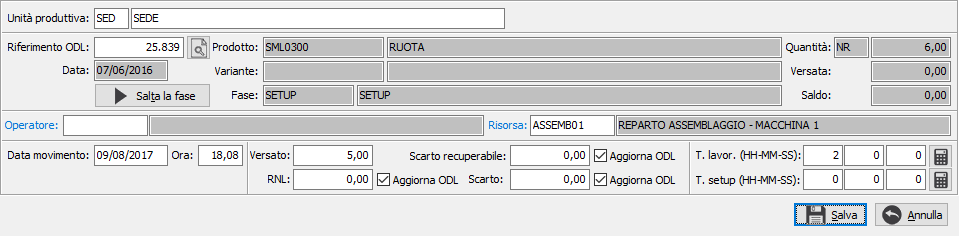

Introduzione
Eventuali variazioni ai versamenti generati automaticamente possono
essere apportati dalla funzione di manutenzione versamenti. All’interno
di questa funzione è possibile:
Variare
i tempi
Variare
i componenti utilizzati e le relative quantità
Modificare
per i versamenti relativi a quantità scarti e resa non lavorata
l’opzione di aggiornamento ODL
Inserire
manualmente nuovi versamenti
Al momento del primo accesso
al programma, lo stesso si situa in modalità di Visualizzazione e presenta
la finestra vuota; da qui è possibile effettuare la ricerca
di versamenti già esistenti per effettuarne la manutenzione
oppure la stampa tramite i bottoni Anteprima o Stampa presenti nella toolbar, sarà inoltre possibile
inserire un nuovo versamento.

Ricerca
e visualizzazione dei versamenti
La ricerca dei movimenti di
versamento non agisce direttamente sui versamenti stessi, ma tramite gli
ODL; i movimenti di versamento sia generati dai movimenti bordo macchina,
che inseriti manualmente non vengono protocollati, ma sono collegati ai
singoli ODL di conseguenza la ricerca dei versamenti avviene tramite la
finestra di Ricerca ODL. Una volta selezionato
l'ODL vengono visualizzati i versamenti ad esso collegati; per lo stesso
ODL possono essere presenti più versamenti singoli riferiti a versamenti
parziali a fronte dello stesso ODL oppure più versamenti collegati fra
loro perchè inerenti, ad esempio, ad un versamento con reso non lavorato
relativi allo stesso ODL. Nel caso venga selezionato un ODL che non ha
versamenti sarà visualizzato un messaggio informativo.

Tramite il bottone scheda/griglia presente
nella toolbar è possibile cambiare
la visualizzazione della testata da singolo ODL ad elenco; in entrambi
i casi è possibile navigare tra gli ODL selezionati tramite la ricerca.


Manutenzione
dei versamenti visualizzati
Una volta individuato l'ODL
per cui visualizzare i versamenti come meglio descritto al paragrafo “Ricerca
e visualizzazione di un versamento”, per effettuare la variazione dei
versamenti è sufficiente premere il tasto funzione F3 oppure cliccare
sul pulsante Modifica della toolbar;
per quanto riguarda la cancellazione se si preme il tasto funzione F5
oppure si clicca sul pulsante Cancella della toolbar
sarà visualizzato il messaggio di conferma; è importante sapere che la cancellazione eliminerà tutti i versamenti
a fronte dell'ODL selezionato. Per cancellare un singolo versamento
sarà necessario entrare in modifica e cancellare il singolo versamento
dalla parte sottostante della finestra; è possibile che la cancellazione
di un versamento comporti la cancellazione anche di altri se derivanti
dallo stesso movimento bordo macchina; in questo caso viene comunque avvisato
l'utente.
La
gestione dei versamenti si compone di due pagine: la pagina dei versamenti
e la pagina dei componenti.

La pagina del versamento contiene
le informazioni principali relative al movimento quali data, ora, quantità,
operatore, risorsa e tempi; le quantità non sono modificabili i restanti
dati sono modificabili. Se gestito il dettaglio lotti o ubicazioni nella
parte bassa della finestra sono presenti le informazioni relative ed in
base a come configurato sarà presente il lotto o l'ubicazione o entrambi;
da questa sezione è possibile modificare lotto e ubicazione, eliminare
i dati presenti ed inserirne di nuovi purché venga mantenuta la coerenza
con la quantità del versamento, in caso contrario non sarà possibile effettuare
il salvataggio del versamento.
 Per l'inserimento dei tempi di lavorazione e setup
sono presenti i campi che è possibile inserire manualmente o tramite
il pulsante accanto al campo che accede alla finestra di
calcolo dei tempi da cui è possibile inserire un periodo di iniziale
ed un periodo finale e premendo Calcola viene rapportato tutto
in secondi e riportato nel relativo campo sul versamento. Per l'inserimento dei tempi di lavorazione e setup
sono presenti i campi che è possibile inserire manualmente o tramite
il pulsante accanto al campo che accede alla finestra di
calcolo dei tempi da cui è possibile inserire un periodo di iniziale
ed un periodo finale e premendo Calcola viene rapportato tutto
in secondi e riportato nel relativo campo sul versamento.
|
 |
 è
presente anche il pulsante mostrato a lato tramite cui è possibile
accedere alla finestra dei costi del versamento; in questa finestra
vengono riepilogati i costi forfettario, di setup, delle risorse
e degli operatori assegnati in base al ciclo di produzione; sono
presenti anche i relativi valori calcolati in relazione ai tempi
inseriti sul versamento stesso. I valori sono tutti modificabili,
ovviamente se il versamento venisse cancellato e rigenerato i
valori eventualmente inseriti manualmente andranno persi. è
presente anche il pulsante mostrato a lato tramite cui è possibile
accedere alla finestra dei costi del versamento; in questa finestra
vengono riepilogati i costi forfettario, di setup, delle risorse
e degli operatori assegnati in base al ciclo di produzione; sono
presenti anche i relativi valori calcolati in relazione ai tempi
inseriti sul versamento stesso. I valori sono tutti modificabili,
ovviamente se il versamento venisse cancellato e rigenerato i
valori eventualmente inseriti manualmente andranno persi.
|
 |

La pagina dei componenti riporta i componenti relativi al versamento
corrente; i dati presenti in questa pagina sono tutti modificabili comprese
le quantità, per queste ultima sarà modificabile solo quella relativa
al versamento collegato. Se gestito il dettaglio lotti o ubicazioni nella
parte bassa della finestra sono presenti le informazioni relative ed in
base a come configurato sarà presente il lotto o l'ubicazione o entrambi
e le quantità del componente non saranno modificabili direttamente, ma
indicheranno sempre il totale dei dettagli presenti. Da questa sezione
è possibile modificare lotto e ubicazione, eliminare i dati presenti ed
inserirne di nuovi; come detto in precedenza le quantità inserite in questa
sezione andranno a totalizzarsi sul relativo componente.
|
|
Se attiva
la gestione matricole sarà possibile accedere dal singolo rigo/dettaglio
alla finestra delle matricole
tramite il pulsante sul rigo o tramite il pulsante Matricole in
alto con cui si accede alla finestra di gestione
massiva. I versamenti hanno la particolarità di gestire le
matricole sia sui composti che sui componenti; per quanto riguarda
i composti la gestione della matricola è subordinata al flag di
configurazione “Tipo assegnazione matricole produzione” che modifica
le regole di inserimento e controllo delle matricole rispetto
alla gestione documenti/movimenti. In caso di "Assegnazione
sulla prima fase" è obbligatorio assegnare le matricole sulla
prima fase; se presenti matricole prenotate in RDP o in fase di
lancio saranno assegnate automaticamente, sarà effettuata un'assegnazione
automatica dalla fase precedente sulla fase successiva; in caso
di "Assegnazione sull'ultima fase" è obbligatorio assegnare
le matricole sull'ultima fase e non sarà possibile farlo nelle
fasi precedenti; se presenti matricole prenotate in RDP o in fase
di lancio saranno assegnate automaticamente. |
Al momento del salvataggio, premendo il pulsante Salva presente nella
Toolbar o il tasto funzione
F10, sarà registrato il versamento ed i suoi eventuali dettagli, i componenti
e relativi dettagli, generati i movimenti di magazzino ed in fase di inserimento
sarà richiesto se effettuare la stampa del versamento appena registrato.
Inserimento
di un nuovo versamento
Sul campo Numero, è sufficiente
premere il tasto funzione F4 oppure cliccare sul pulsante Nuovo della
toolbar. Premendo una prima
volta il tasto Esc il programma torna in stato di visualizzazione, da
dove è possibile effettuare come già descritto la ricerca e l’eventuale
manutenzione di un versamento esistente. Premendo ancora Esc in stato
di visualizzazione, si esce dal programma. L'inserimento manuale di un
versamento apre una finestra in cui inserire i dati ed ha le stesse funzionalità
presenti nell'inserimento di un movimento bordo
macchina.

Viene richiesta l'unità produttiva
con proposta l'unità produttiva di default valida per l'utente connesso
ad OS1; è possibile solo scegliere l'unità produttiva, se gestite in configurazione
le unità produttive multiple; è necessario indicare il numero di ODL su
cui deve essere effettuato il versamento; tramite il tasto posto di fianco è possibile
richiamare una finestra di ricerca ODL.
Specificato l'ODL viene automaticamente impostata la risorsa ed è obbligatorio
inserire l'operatore; inoltre è necessario indicare almeno una delle quantità
presenti, ogni quantità inserita darà luogo ad un singolo
versamento. Per l'inserimento dei tempi di lavorazione e setup sono presenti
i campi che è possibile inserire manualmente o tramite il pulsante
che accede alla finestra di calcolo dei tempi da cui è possibile inserire
un periodo di iniziale ed un periodo finale e premendo Calcola viene rapportato
tutto in ore, minuti e secondi e riportato nei relativi campi sul movimento.
Premendo il pulsante Salva vengono generati i movimenti di versamento
e riportati nella finestra principale dove potranno essere ulteriormente
modificati come spiegato nel paragrafo relativo alla manutenzione.
Premendo il pulsante Salva
presente nella Toolbar o il
tasto funzione F10, sarà registrato il versamento ed i suoi eventuali
dettagli, i componenti e relativi dettagli, generati i movimenti di magazzino
e sarà richiesto se effettuare la stampa del versamento appena registrato.